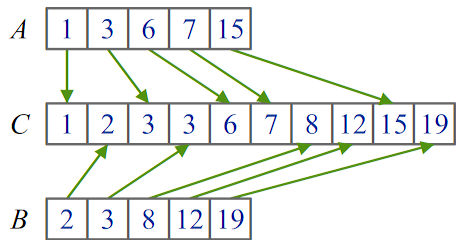
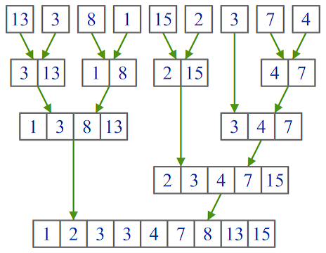

![\begin{array}{l}
a \leftarrow 0;\ b \leftarrow 0;\\
\text{While }a < n_a\text{ and }b < n_b\\
\left|\quad\begin{array}{l}
\text{If }A[a]\leqslant B[b]\\
\left|\quad\begin{array}{l}
C[a+b] \leftarrow A[a];\\
a \leftarrow a+1;
\end{array}\right.\\
\text{Else}\\
\left|\quad\begin{array}{l}
C[a+b] \leftarrow B[b];\\
b \leftarrow b+1;
\end{array}\right.\\
\text{End;}
\end{array}\right.\\
\text{End;}\\
\text{If }a < n_a\\
\left|\quad\text{Copy remain part of A}\right.\\
\text{Else}\\
\left|\quad\text{Copy remain part of B}\right.\\
\text{End;}
\end{array}](img_alg_1.png)
(1)
Сортировка слиянием — вероятно, один из самых простых алгоритмов сортировки (среди «быстрых» алгоритмов). Особенностью этого алгоритма является то, что он работает с элементами массива преимущественно последовательно, благодаря чему именно этот алгоритм используется при сортировке в системах с различными аппаратными ограничениями (например, при сортировке данных на жёстком диске, или даже на магнитной ленте). Кроме того, сортировка слиянием — чуть ли не единственный алгоритм, который может быть эффективно использован для сортировки таких структур данных, как связанные списки. Последовательная работа с элементами массива значительно увеличивает скорость сортировки в системах с кэшированием.
Сортировка слиянием — стабильный алгоритм сортировки. Это означает, что порядок «равных» элементов не изменяется в результате работы алгоритма. В некоторых задачах это свойство достаточно важно.
Этот алгоритм был предложен Джоном фон Нейманом в 1945 году
Везде в лекции элементы массивов нумеруются с нуля.
Допустим, у нас есть два отсортированных массива A и B размерами naи nb соответственно, и мы хотим объединить их элементы в один большой отсортированный массив C размером na + nb. Для этого можно применить процедуру слияния, суть которой заключается в повторяющемся «отделении» элемента, наименьшего из двух имеющихся в началах исходных массивов, и присоединении этого элемента к концу результирующего массива. Элементы мы переносим до тех пор, пока один из исходных массивов не закончится. После этого оставшийся «хвост» одного из входных массивов дописывается в конец результирующего массива. Пример работы процедуры показан на рисунке:

Рис. 1. Пример работы процедуры слияния
Алгоритм слияния формально можно записать следующим образом:
|
|
(1) |
Для обеспечения стабильности алгоритма сортировки нужно, чтобы в случае равенства элементов тот элемент, что идёт раньше во входном массиве, попадал в результирующий массив в первую очередь. Мы увидим далее, что если два элемента попали в разные массивы (A и B), то тот элемент, что шёл раньше, попадёт в массив A. Следовательно, в случае равенства элемент из массива A должен иметь приоритет. Поэтому в алгоритме стои́т знак <= вместо < при сравнении элементов.
Недостатком представленного алгоритма является необходимость
дописывать оставшийся кусок, из-за чего при дальнейших модификациях
алгоритма нам придётся писать много повторяющегося кода. Чтобы
этого избежать, будем использовать чуть менее эффективный, но более
короткий алгоритм, в котором копирование «хвоста» встроено в основной
цикл:
|
|
(2) |
Очевидно, время работы процедуры слияния составляет O(na+nb).
Процедура слияния требует два отсортированных массива. Заметив, что массив из одного элемента по определению является отсортированным, мы можем осуществить сортировку следующим образом:
Время работы сортировки слиянием составляет O(n * ln(n)). Пример работы процедуры показан на рисунке:

Рис. 2. Пример работы рекурсивного алгоритма сортировки слиянием
![\begin{array}{l}
a \leftarrow 0;\ b \leftarrow 0;\\
\text{While }a+b < n_a+n_b\\
\left|\quad\begin{array}{l}
\text{If }b\geqslant n_b\text{ or }\left(a<n_a\text{ and }A[a]\leqslant B[b]\right)\\
\left|\quad\begin{array}{l}
C[a+b] \leftarrow A[a];\\
a \leftarrow a+1;
\end{array}\right.\\
\text{Else}\\
\left|\quad\begin{array}{l}
C[a+b] \leftarrow B[b];\\
b \leftarrow b+1;
\end{array}\right.\\
\text{End;}
\end{array}\right.\\
\text{End;}
\end{array}](img_alg_2.png)